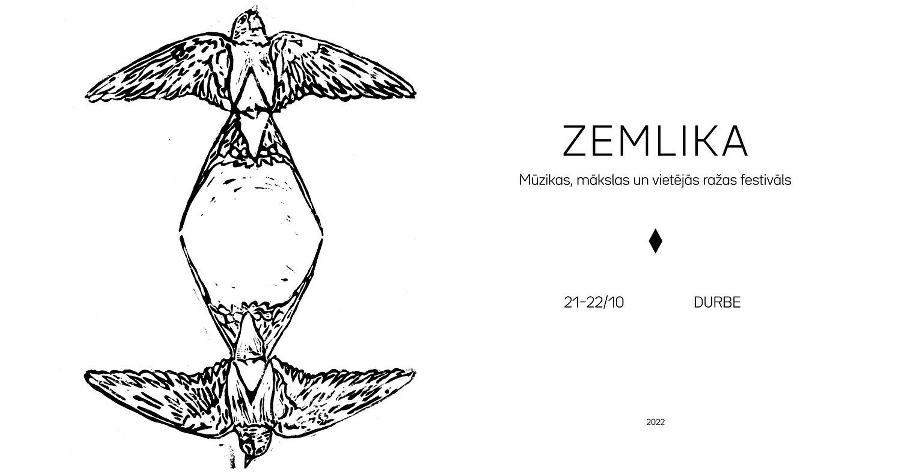

"Zemlika" ir mūzikas, mākslas un vietējās ražas festivāls, kas 2022. gadā tas notiks jau vienpadsmito> reizi. Nemainīgi rīkots oktobra pēdējā nogalē, tā norises vieta ir Durbe, kas ar aptuveni 500 iedzīvotājiem turpina ieņemt mazākās Latvijas pilsētas godu. Lai arī festivāla galvenie notikumi ir saistīti ar dažādu mūzikas stilu pārstāvjiem, apmeklētājiem festivāla otrajā dienā vienmēr piedāvāts arī apmeklēt izstādi, teātra viesizrādi vai kinoseansu.
 Attēla avots"Zemlika" šogad pēc Covid-19 pandēmijas uzspiesta pārtraukuma pirmoreiz atkal notiks divu dienu formātā. Organizatori ir parūpējušies par teju 20 mūziķu un mūzikas apvienību ierašanos.
Izziņotie mākslinieki
Festivāla rīkotājiem skaitoties koncertu organizēšanā specializētajai biedrībai "SKYR", uzcītīgākie pasākuma sekotāji jau zina Miku Magoni kā festivāla tēvu, smadzenes un sirdi, jo tieši viņa vēlmē iedzīvināt kultūras dzīvi tieši dzimtajā Durbē dzima "Zemlika" 1
2020. gadā pandēmijas dēļ festivāls notika sašaurinātā - vienas dienas - formā, bet 2021. gadā pavisam īsi pirms norises organizatori noteikto ierobežojumu dēļ bija spiesti to atcelt.
Šogad festivāls tiek rīkošanu atbalsta Valsts kultūrkapitāla fonds, Kurzemes plānošanas reģions, Ziemeļvalstu Ministru padomes birojs Latvijā, Stena Line, Dienvidkurzemes novada pašvaldība, Nurme Brewery un Valmiermuižas alu
Koncerti jau ierasti noritēs trīs Durbes koncertvietās